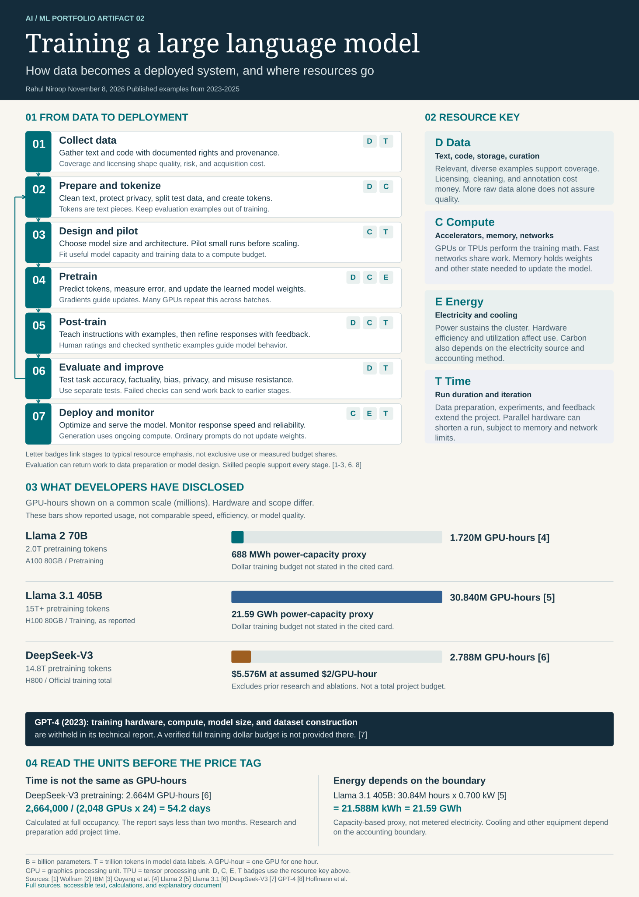

Data
Text, code, storage, curation
Relevant, diverse examples support coverage. Licensing, cleaning, and annotation cost money. More raw data alone does not assure quality.
AI / ML Portfolio · Artifact 02 · November 8, 2026
The process, infrastructure, and costs behind generative AI.
A visual guide from data collection to deployment, grounded in developer reports and worked resource calculations.
Data quality, hardware efficiency, and a clear accounting boundary all matter.
Core idea A deployed assistant combines a pretrained model, later instruction and preference training, evaluation, and a serving system. Training changes model weights. Inference uses those weights to generate tokens. [1-3]
Historical case studies from 2023-2025. This artifact explains published work. It does not report personally trained models or benchmark results.
01 / Visual artifact
The graphic is scalable. Use the text sections below for an accessible reading version.

02 / Accessible text
Stages overlap and repeat. A failed evaluation may require new data, more tuning, or a different model design. [1-3, 6, 8]
Gather text and code with documented rights and provenance.
Coverage and licensing shape quality, risk, and acquisition cost.
Deduplicate, filter sensitive content, split held-out data, then tokenize.
Tokens are text units. Clean splits help prevent test leakage.
Choose model size and architecture. Test small runs and a compute budget.
Balance data, memory, and model capacity before scaling up.
Predict the next token, measure loss, backpropagate, and update weights.
Repeat across batches on many GPUs. Save recovery checkpoints.
Teach instructions with demonstrations, then optimize preferences or rewards.
SFT and methods such as RLHF use human or checked synthetic feedback.
Test task accuracy, factuality, bias, privacy, and misuse resistance.
Use separate tests. Failed checks can send work back to earlier stages.
Optimize and serve the model. Track latency, quality, failures, and use.
Inference needs ongoing compute. Ordinary prompts do not update weights.
The model receives token sequences, estimates the next-token probabilities, and compares predictions with the actual next tokens. The text supplies the target, so this is self-supervised learning. Backpropagation calculates gradients, and an optimizer updates the weights to reduce loss. Large runs distribute batches and model state across accelerators. Checkpoints allow recovery after failures. [1, 2, 6]
Post-training terms: Supervised fine-tuning (SFT) uses example prompts and desired responses. Reinforcement learning from human feedback (RLHF) uses human preferences, often through a learned reward model. Other preference or reward methods can be used, so a single recipe does not describe every model. [3, 6]
03 / Infrastructure
Text, code, storage, curation
Relevant, diverse examples support coverage. Licensing, cleaning, and annotation cost money. More raw data alone does not assure quality.
GPUs or TPUs, memory, networks
Accelerators perform training math. Fast interconnects share work. Memory holds weights, activations, and optimizer state.
Electricity and cooling
Power sustains the cluster. Hardware efficiency and utilization affect use. Carbon also depends on the electricity source and accounting method.
Cluster hours and project effort
Parallel hardware can shorten a run. Data preparation, experiments, feedback, and evaluation extend the project and require skilled people.
Model performance depends on the training objective, data, architecture, and evaluation context. A larger model or a larger compute bill alone does not establish better performance. Compute-optimal research studies the balance between parameters and training data. [3, 8]
04 / Published examples
Figures below are reported by developers. Energy figures are explicitly calculated proxies. GPU-hours on different devices are not a common measure of useful computation.
| Model | Pretraining tokens | GPU-hours | Compute scope | Cost or energy context |
|---|---|---|---|---|
| Llama 2 70B2023 | 2.0T | 1.720320MA100 80GB | Pretraining | 688 MWh power-capacity proxyDollar training budget not stated in the cited card. [4] |
| Llama 3.1 405B2024 | 15T+ | 30.840000MH100 80GB | Training, as reported | 21.59 GWh power-capacity proxyDollar training budget not stated in the cited card. [5] |
| DeepSeek-V32024 release | 14.8T | 2.788000MH800 | Official training total | $5.576M at assumed $2/GPU-hourExcludes prior research and ablations. Not a total project budget. [6] |
These are the report's official-training estimates. Prior research and ablation experiments are excluded. Data acquisition, staff, infrastructure ownership, and long-term serving require separate accounting. Energy consumption is not specified in this cost table. [6]
DeepSeek-V3 is a mixture-of-experts model with 671B total parameters and 37B activated per token. Its architecture and H800 hardware differ from the dense Llama examples. The GPU-hour bars are descriptive, not an efficiency ranking. [6]
05 / Quantitative reasoning
GPU-hours ÷ concurrent GPUs ÷ 24
DeepSeek-V3 pretraining:
2,664,000 ÷ 2,048 ÷ 24 = 54.2 days
This is a full-occupancy equivalent. The report states less than two months for pretraining. It is not the duration of the entire development project. [6]
GPU-hours × stated power capacity in kW
Llama 3.1 405B:
30,840,000 × 0.700 = 21.588M kWh
Equivalent to 21.59 GWh.
Llama 2 70B: 1,720,320 × 0.400 = 688,128 kWh, or 688 MWh. These are capacity-based proxies, not metered electricity. The model cards describe power capacity adjusted for power-usage efficiency. Check that boundary before adding facility overhead. [4, 5]
Change the assumptions to see how parallelism, power, and an hourly quote affect a fixed amount of GPU work. These are scenario calculations, not actual model costs or current rental prices.
Constant occupancy and device power are assumed. Energy excludes facility overhead. The 500 W default is an illustrative assumption, not a DeepSeek measurement. Changing GPU count does not change the fixed GPU-hour total in this simplified scenario.
06 / Professional portfolio
My career focus is AI engineering and infrastructure. I am building a portfolio that connects machine-learning concepts with the data pipelines, compute systems, and evaluation practices needed to use AI responsibly.
My strengths demonstrated here are explaining complex systems, checking evidence, and translating resource measurements into clear technical decisions.
Relevant technologies and concepts: transformers, GPU clusters, distributed training, tokenization, SFT, RLHF, HTML, SVG, and GitHub.
Artifact 01
Challenge: Explain how ten ML methods differ.
Solution: A learning-task framework, method cards, and classification rationale.
Competency: ML taxonomy and model-selection reasoning.
Explore the first artifactArtifact 02
Challenge: Explain training infrastructure without conflating compute, elapsed time, electricity, and total cost.
Solution: A sourced infographic, model-resource comparison, worked calculations, and explanatory document.
Competency: AI engineering research and infrastructure reasoning.
View the GitHub repository07 / Evidence trail
Primary model cards and papers support the resource figures. The assigned introductory materials provide conceptual context.
Wolfram's article explains token probabilities, neural weights, loss, and feedback. Its 2023 discussion is introductory context rather than a source for current model size or training budgets. [1]
The Eye on Tech video transcript describes ChatGPT as a conversational generative system, introduces prediction, and notes accuracy limits. Its early-model and 2021-data statements describe that historical video, not every current assistant. [10]
The IBM video's description and chapter outline introduce LLMs, foundation models, training, and business uses. Its transcript did not load during preparation, so the companion IBM article and primary papers support the technical explanations here. [2, 9]